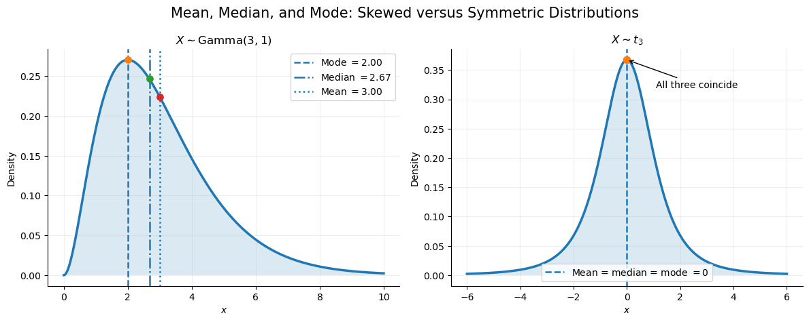
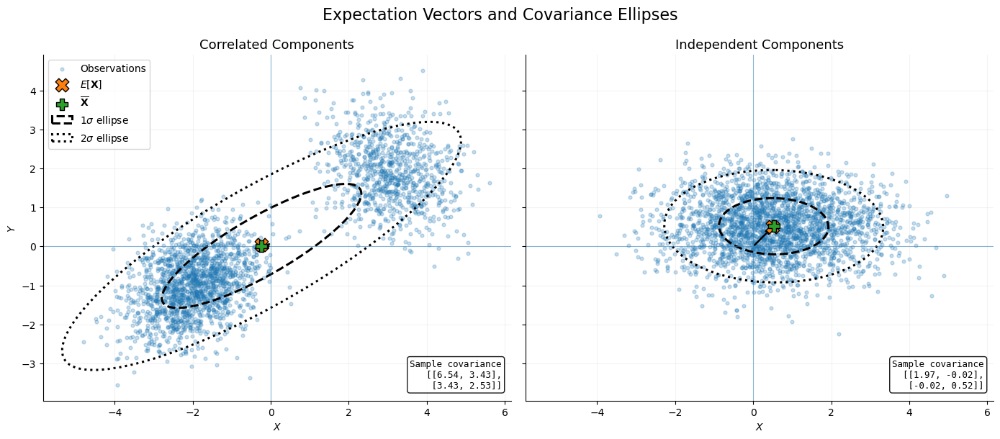
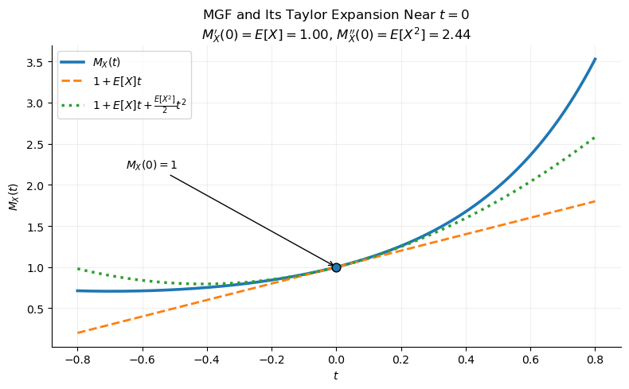

Show Python code
import numpy as np
import matplotlib.pyplot as plt
from scipy import stats
from scipy.integrate import trapezoid
rng = np.random.default_rng(42)Carlos Buitrago & Anastasiya Chikalova
Let \(X\) be a continuous random variable with probability density function \(p(x)\).
The expectation (or expected value) of \(X\) is defined by
\[ \boxed{ E[X] = \int_{-\infty}^{\infty} x\,p(x)\,dx, } \]
provided that the integral converges.
shape = 3
scale = 1
degrees_of_freedom = 3
fig, axes = plt.subplots(
1,
2,
figsize=(12, 4.8)
)
# ---------------------------------------------------------
# Gamma distribution
# ---------------------------------------------------------
x_gamma = np.linspace(0, 10, 1500)
gamma_density = stats.gamma.pdf(
x_gamma,
a=shape,
scale=scale
)
gamma_mean = stats.gamma.mean(
a=shape,
scale=scale
)
gamma_median = stats.gamma.median(
a=shape,
scale=scale
)
gamma_mode = (shape - 1) * scale
axes[0].plot(
x_gamma,
gamma_density,
linewidth=2.5
)
axes[0].fill_between(
x_gamma,
gamma_density,
alpha=0.16
)
gamma_locations = [
(gamma_mode, "Mode", "--"),
(gamma_median, "Median", "-."),
(gamma_mean, "Mean", ":")
]
for location, label, linestyle in gamma_locations:
height = stats.gamma.pdf(
location,
a=shape,
scale=scale
)
axes[0].axvline(
location,
linestyle=linestyle,
linewidth=1.8,
label=rf"{label} $={location:.2f}$"
)
axes[0].scatter(
location,
height,
s=45,
zorder=3
)
axes[0].set(
xlabel="$x$",
ylabel="Density",
title=r"$X\sim\mathrm{Gamma}(3,1)$"
)
axes[0].legend()
# ---------------------------------------------------------
# Student's t distribution
# ---------------------------------------------------------
x_t = np.linspace(-6, 6, 1500)
t_density = stats.t.pdf(
x_t,
df=degrees_of_freedom
)
t_mean = stats.t.mean(
df=degrees_of_freedom
)
t_median = stats.t.median(
df=degrees_of_freedom
)
t_mode = 0
axes[1].plot(
x_t,
t_density,
linewidth=2.5
)
axes[1].fill_between(
x_t,
t_density,
alpha=0.16
)
# Mean, median, and mode coincide at zero
central_height = stats.t.pdf(
0,
df=degrees_of_freedom
)
axes[1].axvline(
0,
linestyle="--",
linewidth=1.8,
label=(
rf"Mean = median = mode $=0$"
)
)
axes[1].scatter(
0,
central_height,
s=55,
zorder=3
)
axes[1].annotate(
"All three coincide",
xy=(0, central_height),
xytext=(1.1, 0.32),
arrowprops={
"arrowstyle": "->",
"linewidth": 1
},
fontsize=10
)
axes[1].set(
xlabel="$x$",
ylabel="Density",
title=rf"$X\sim t_{{{degrees_of_freedom}}}$"
)
axes[1].legend()
# ---------------------------------------------------------
# Shared formatting
# ---------------------------------------------------------
for ax in axes:
ax.grid(alpha=0.2)
ax.spines["top"].set_visible(False)
ax.spines["right"].set_visible(False)
fig.suptitle(
"Mean, Median, and Mode: Skewed versus Symmetric Distributions",
fontsize=15
)
fig.tight_layout()
plt.show()
For a random vector
\[ \mathbf{X} = \begin{pmatrix} X_1 \\ X_2 \\ \vdots \\ X_n \end{pmatrix}, \]
the expectation is obtained by taking the expectation of each component:
\[ E[\mathbf{X}] = \begin{pmatrix} E[X_1] \\ E[X_2] \\ \vdots \\ E[X_n] \end{pmatrix}. \]
Thus, \(E[\mathbf{X}]\) is a vector representing the average location, or center of mass, of the distribution.
The variability of a random vector is described by its covariance matrix. For a two-dimensional random vector \((X,Y)\) the covariance matrix is
\[ \operatorname{Cov}(\mathbf{X}) = \begin{pmatrix} \operatorname{Var}(X) & \operatorname{Cov}(X,Y) \\ \operatorname{Cov}(X,Y) & \operatorname{Var}(Y) \end{pmatrix}. \]
The scatterplot represents observations from a two-dimensional random vector. The dashed and dotted ellipses summarize the information contained in the covariance matrix \(\operatorname{Cov}(\mathbf{X})\). They are centered at the sample mean and correspond to one and two standard deviations, respectively.
The covariance ellipses illustrate three important aspects of the covariance matrix:
import numpy as np
import matplotlib.pyplot as plt
from matplotlib.patches import Ellipse
rng = np.random.default_rng(42)
def add_covariance_ellipse(
ax,
mean,
covariance,
standard_deviations=1,
**kwargs
):
"""Draw a covariance ellipse."""
eigenvalues, eigenvectors = np.linalg.eigh(covariance)
order = np.argsort(eigenvalues)[::-1]
eigenvalues = eigenvalues[order]
eigenvectors = eigenvectors[:, order]
angle = np.degrees(
np.arctan2(
eigenvectors[1, 0],
eigenvectors[0, 0]
)
)
width = (
2
* standard_deviations
* np.sqrt(eigenvalues[0])
)
height = (
2
* standard_deviations
* np.sqrt(eigenvalues[1])
)
ellipse = Ellipse(
xy=mean,
width=width,
height=height,
angle=angle,
fill=False,
**kwargs
)
ax.add_patch(ellipse)
# ==========================================================
# Correlated random vector (mixture)
# ==========================================================
sample_size = 2500
first_probability = 0.65
second_probability = 0.35
first_mean = np.array([-2.0, -1.0])
second_mean = np.array([3.0, 2.0])
first_covariance = np.array([
[0.7, 0.25],
[0.25, 0.6]
])
second_covariance = np.array([
[0.8, -0.2],
[-0.2, 0.7]
])
mixture_component = rng.binomial(
n=1,
p=second_probability,
size=sample_size
)
first_cluster = rng.multivariate_normal(
mean=first_mean,
cov=first_covariance,
size=sample_size
)
second_cluster = rng.multivariate_normal(
mean=second_mean,
cov=second_covariance,
size=sample_size
)
sample = np.where(
mixture_component[:, None] == 1,
second_cluster,
first_cluster
)
theoretical_mean = (
first_probability * first_mean
+ second_probability * second_mean
)
empirical_mean = sample.mean(axis=0)
empirical_covariance = np.cov(
sample,
rowvar=False
)
# ==========================================================
# Independent random vector
# ==========================================================
independent_mean = np.array([0.5, 0.5])
# Different variances but zero covariance
independent_covariance = np.array([
[2.0, 0.0],
[0.0, 0.5]
])
independent_sample = rng.multivariate_normal(
mean=independent_mean,
cov=independent_covariance,
size=sample_size
)
independent_empirical_mean = independent_sample.mean(axis=0)
independent_empirical_covariance = np.cov(
independent_sample,
rowvar=False
)
# ==========================================================
# Plot
# ==========================================================
fig, axes = plt.subplots(
1,
2,
figsize=(14, 6),
sharex=True,
sharey=True
)
datasets = [
{
"sample": sample,
"mean": theoretical_mean,
"sample_mean": empirical_mean,
"covariance": empirical_covariance,
"title": "Correlated Components"
},
{
"sample": independent_sample,
"mean": independent_mean,
"sample_mean": independent_empirical_mean,
"covariance": independent_empirical_covariance,
"title": "Independent Components"
}
]
for ax, data in zip(axes, datasets):
ax.scatter(
data["sample"][:, 0],
data["sample"][:, 1],
s=12,
alpha=0.25,
label="Observations"
)
ax.scatter(
data["mean"][0],
data["mean"][1],
marker="X",
s=180,
edgecolors="black",
linewidths=1,
label=r"$E[\mathbf{X}]$",
zorder=5
)
ax.scatter(
data["sample_mean"][0],
data["sample_mean"][1],
marker="P",
s=130,
edgecolors="black",
linewidths=1,
label=r"$\overline{\mathbf{X}}$",
zorder=5
)
add_covariance_ellipse(
ax,
data["sample_mean"],
data["covariance"],
standard_deviations=1,
linewidth=2.2,
linestyle="--",
label=r"$1\sigma$ ellipse"
)
add_covariance_ellipse(
ax,
data["sample_mean"],
data["covariance"],
standard_deviations=2,
linewidth=2.2,
linestyle=":",
label=r"$2\sigma$ ellipse"
)
ax.annotate(
"",
xy=data["mean"],
xytext=(0, 0),
arrowprops=dict(
arrowstyle="->",
linewidth=1.8
)
)
covariance_text = (
"Sample covariance\n"
f"[[{data['covariance'][0,0]:.2f}, {data['covariance'][0,1]:.2f}],\n"
f" [{data['covariance'][1,0]:.2f}, {data['covariance'][1,1]:.2f}]]"
)
ax.text(
0.98,
0.03,
covariance_text,
transform=ax.transAxes,
ha="right",
va="bottom",
fontsize=9,
family="monospace",
bbox=dict(
boxstyle="round",
facecolor="white",
alpha=0.9
)
)
ax.axhline(
0,
linewidth=0.8,
alpha=0.5
)
ax.axvline(
0,
linewidth=0.8,
alpha=0.5
)
ax.set_title(
data["title"],
fontsize=13
)
ax.set_xlabel("$X$")
ax.grid(alpha=0.15)
ax.set_aspect(
"equal",
adjustable="box"
)
ax.spines["top"].set_visible(False)
ax.spines["right"].set_visible(False)
axes[0].set_ylabel("$Y$")
axes[0].legend(loc="upper left")
fig.suptitle(
"Expectation Vectors and Covariance Ellipses",
fontsize=16
)
fig.tight_layout()
plt.show()
The standard Cauchy distribution has density
\[ f(x) = \frac{1}{\pi(1+x^2)}, \qquad -\infty<x<\infty. \]
Its expectation is
\[ E[X] = \int_{-\infty}^{\infty} \frac{x}{\pi(1+x^2)} \,dx. \]
However,
\[ \int_{-\infty}^{\infty} \frac{|x|}{\pi(1+x^2)} \,dx = \infty. \]
Therefore,
\[ \boxed{ E[X]\ \text{does not exist.} } \]
Let \(X\) be a continuous random variable with density \(p(x)\), and let \(g\) be any continuous function.
Then
\[ \boxed{ E[g(X)] = \int_{-\infty}^{\infty} g(x)\,p(x)\,dx. } \]
This formula allows us to compute expectations without first finding the distribution of \(g(X)\).
Let \(\mathbf{X}=(X_1,\ldots,X_n)\) be a continuous random vector with joint density \(p(\mathbf{x})\), and let \(g\) be any continuous function.
Then
\[ \boxed{ E[g(\mathbf{X})] = \int_{\mathbb{R}^n} g(\mathbf{x})\,p(\mathbf{x})\,d\mathbf{x}. } \]
For a two-dimensional random vector \(\mathbf{X}=(X,Y)\), this becomes
\[ \boxed{ E[g(X,Y)] = \int_{-\infty}^{\infty} \int_{-\infty}^{\infty} g(x,y)\,p(x,y)\,dx\,dy. } \]
This formula allows us to compute expectations without first finding the distribution of \(g(\mathbf{X})\).
| Distribution | Parameters | \(E[X]\) | \(\mathrm{Var}(X)\) |
|---|---|---|---|
| Uniform | \(U(a,b)\) | \(\displaystyle\frac{a+b}{2}\) | \(\displaystyle\frac{(b-a)^2}{12}\) |
| Exponential | \(\operatorname{Exp}(\lambda)\) | \(\displaystyle\frac1\lambda\) | \(\displaystyle\frac1{\lambda^2}\) |
| Gamma | \(\Gamma(\alpha,\lambda)\) (rate) | \(\displaystyle\frac{\alpha}{\lambda}\) | \(\displaystyle\frac{\alpha}{\lambda^2}\) |
| Normal | \(N(\mu,\sigma^2)\) | \(\mu\) | \(\sigma^2\) |
| Chi-Squared | \(\chi_n^2\) | \(n\) | \(2n\) |
| Student’s \(t\) | \(t_n\) | \(\begin{cases} 0,&n>1\\ \text{undefined},&n\le1 \end{cases}\) | \(\begin{cases} \displaystyle\frac{n}{n-2},&n>2\\ \infty,&1<n\le2\\ \text{undefined},&n\le1 \end{cases}\) |
| Fisher’s \(F\) | \(F_{n,m}\) | \(\displaystyle\frac{m}{m-2},\quad m>2\) | \(\displaystyle \frac{2m^2(n+m-2)} {n(m-2)^2(m-4)}, \quad m>4\) |
Let \(X\) be a random variable. The moment generating function of \(X\) is defined by
\[ \boxed{ M_X(t) = \mathbb E[e^{tX}], } \]
for every value of \(t\) for which the expectation exists.
For a discrete random variable,
\[ M_X(t) = \sum_x e^{tx}\, \mathbb P(X=x). \]
For a continuous random variable,
\[ M_X(t) = \int_{-\infty}^{\infty} e^{tx} f_X(x)\,dx. \]
The exponential function has the Taylor expansion
\[ e^{tX} = \sum_{k=0}^{\infty} \frac{(tX)^k}{k!}. \]
Taking expectations,
\[ \begin{aligned} M_X(t) &= \mathbb E[e^{tX}]\\ &= \sum_{k=0}^{\infty} \frac{t^k}{k!} \mathbb E[X^k]. \end{aligned} \]
Thus, the coefficients of the Taylor series are precisely the moments of the distribution.
mu = 1
sigma = 1.2
t = np.linspace(-0.8, 0.8, 1000)
mgf = np.exp(
mu * t
+ sigma**2 * t**2 / 2
)
first_moment = mu
second_moment = (
mu**2 + sigma**2
)
linear_approximation = (
1 + first_moment * t
)
quadratic_approximation = (
1
+ first_moment * t
+ second_moment * t**2 / 2
)
fig, ax = plt.subplots(figsize=(8, 5))
ax.plot(
t,
mgf,
linewidth=2.6,
label=r"$M_X(t)$"
)
ax.plot(
t,
linear_approximation,
linestyle="--",
linewidth=2,
label=r"$1+E[X]t$"
)
ax.plot(
t,
quadratic_approximation,
linestyle=":",
linewidth=2.5,
label=r"$1+E[X]t+\frac{E[X^2]}{2}t^2$"
)
ax.scatter(
0,
1,
s=60,
edgecolor="black",
linewidth=1,
zorder=4
)
ax.annotate(
r"$M_X(0)=1$",
xy=(0, 1),
xytext=(-0.65, 2.2),
arrowprops={
"arrowstyle": "->"
}
)
ax.set(
xlabel="$t$",
ylabel="$M_X(t)$",
title=(
r"MGF and Its Taylor Expansion Near $t=0$"
+ "\n"
+ rf"$M_X'(0)=E[X]={first_moment:.2f}$, "
+ rf"$M_X''(0)=E[X^2]={second_moment:.2f}$"
)
)
ax.legend()
ax.grid(alpha=0.2)
ax.spines["top"].set_visible(False)
ax.spines["right"].set_visible(False)
fig.tight_layout()
plt.show()
Unlike expectations, moment generating functions do not always exist.
The expectation \(\mathbb E[e^{tX}]\) must be finite.
Some heavy-tailed distributions do not possess a finite moment generating function for any nonzero value of \(t\).
One of the most important theoretical results states that
If two random variables have the same moment generating function on an open interval containing zero, then they have exactly the same probability distribution.
Therefore,
\[ M_X(t)=M_Y(t) \quad \Longrightarrow \quad X\overset{d}=Y. \]
This theorem makes the MGF an extremely useful tool for identifying probability distributions.
Computing Moments
\[ M_X^{(k)}(0)=\mathbb E[X^k], \qquad k=1,2,\ldots \]
In particular, \(\mathbb E[X]=M_X'(0)\).
Sum of Independent Random Variables
If \(X\) and \(Y\) are independent, then
\[ M_{X+Y}(t)=M_X(t)M_Y(t). \]
More generally, if \(X_1,\ldots,X_n\) are independent, then
\[ M_{X_1+\cdots+X_n}(t) = \prod_{i=1}^{n} M_{X_i}(t). \]
Let \(X\sim\mathrm{Poisson}(\lambda)\), whose probability mass function is
\[ \mathbb P(X=k) = e^{-\lambda} \frac{\lambda^k}{k!}, \qquad k=0,1,2,\ldots \]
We obain
\[ \begin{aligned} M_X(t) &= \sum_{k=0}^{\infty} e^{tk} e^{-\lambda} \frac{\lambda^k}{k!}\\ &= e^{-\lambda} \sum_{k=0}^{\infty} \frac{(\lambda e^t)^k}{k!}\\ &= e^{-\lambda} e^{\lambda e^t}\\ &= \boxed{ \exp\!\left(\lambda(e^t-1)\right). } \end{aligned} \]
Notice, that all properties hold in this case. Verify it by yourself.
| Distribution | Parameters | Moment Generating Function |
|---|---|---|
| Bernoulli | \(X\sim\mathrm{Bernoulli}(p)\) | \(M_X(t)=1-p+pe^t\) |
| Binomial | \(X\sim\mathrm{Binomial}(n,p)\) | \(M_X(t)=\left(1-p+pe^t\right)^n\) |
| Geometric | \(X\sim\mathrm{Geometric}(p)\) | \(M_X(t)=\dfrac{pe^t}{1-(1-p)e^t}\) |
| Negative Binomial | \(X\sim\mathrm{NegBin}(r,p)\) | \(M_X(t)=\left(\dfrac{pe^t}{1-(1-p)e^t}\right)^r\) |
| Poisson | \(X\sim\mathrm{Poisson}(\lambda)\) | \(M_X(t)=\exp\!\left(\lambda(e^t-1)\right)\) |
| Uniform | \(X\sim U(a,b)\) | \(M_X(t)=\dfrac{e^{tb}-e^{ta}}{t(b-a)}\) |
| Exponential | \(X\sim\mathrm{Exp}(\lambda)\) | \(M_X(t)=\dfrac{\lambda}{\lambda-t}\) |
| Gamma | \(X\sim\Gamma(\alpha,\lambda)\) | \(M_X(t)=\left(\dfrac{\lambda}{\lambda-t}\right)^\alpha\) |
| Normal | \(X\sim N(\mu,\sigma^2)\) | \(M_X(t)=\exp\!\left(\mu t+\dfrac{\sigma^2t^2}{2}\right)\) |
For the Geometric distribution,
\[ \mathbb P(X=k)=p(1-p)^{k-1}, \qquad k=1,2,\ldots \]
For the Exponential and Gamma distributions, the formulas are valid for
\[ t<\lambda. \]
At first glance, the moment generating function (MGF) may seem like just another way to describe a probability distribution. However, it is one of the most useful tools in probability theory.
First, the MGF provides a convenient way to compute the moments of a random variable.
Even more importantly, MGFs play a central role in proving fundamental results about sums of independent random variables. In particular, they provide one of the simplest and most elegant proofs of the Central Limit Theorem (CLT) one of the most important results in probability and statistics.